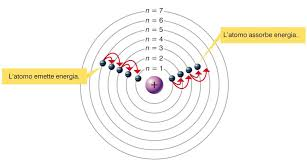
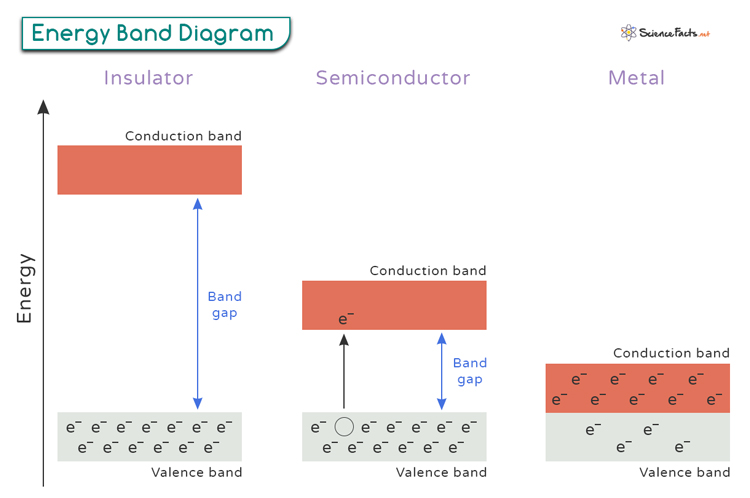
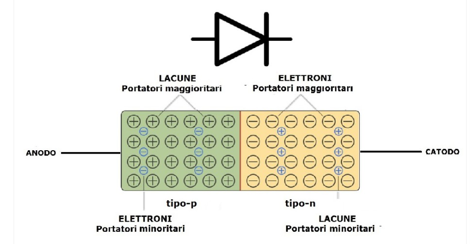
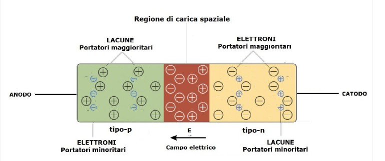
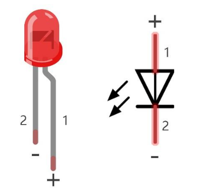

Lezione sul LED: teoria e applicazioni con ESP32
Introduzione
In questa lezione verrà studiato il LED (Light Emitting Diode), uno dei componenti elettronici più semplici ma anche più utilizzati.
La lezione è divisa in due parti:
1. Parte teorica: funzionamento fisico ed elettrico del LED
2. Parte pratica: utilizzo del LED con ESP32 e programmazione in MicroPython
1. Parte teorica
1.1 I Semiconduttori
I semiconduttori, nella scienza e tecnologia dei materiali, sono materiali che hanno resistività intermedia tra i metalli e gli isolanti. Sono esempi di semiconduttori il silicio e il germanio, l'arseniuro di gallio (GaAs) e il carburo di silicio (SiC).
Essi sono alla base di tutti i principali dispositivi elettronici e microelettronici a stato solido quali transistor, diodi e diodi a emissione luminosa (LED).

Il semiconduttore e la sua conducibilità
Un semiconduttore è un materiale la cui conducibilità elettrica è intermedia tra quella di un conduttore (come il rame la cui resistenza si approssima a $1.68 \times 10^{-8}$ ohm) e quella di un isolante (come la plastica con resistività $10^9$ ohm).
La sua conducibilità dipende dalla struttura energetica degli elettroni all’interno del materiale.
Bande energetiche: valenza e conduzione
Negli atomi di un solido, gli elettroni possono occupare solo determinati livelli energetici, organizzati in bande:

-
Banda di valenza
È la banda energetica occupata dagli elettroni legati agli atomi responsabili dei legami chimici. In questa banda gli elettroni non si possono muovere liberamente, quindi non contribuiscono alla corrente elettrica. -
Banda di conduzione
È una banda energetica superiore, piu alta rispetto a quella di conduzione dove gli elettroni: - non sono più legati ad un atomo specifico;
- possono muoversi liberamente nel materiale;
- quindi trasportano corrente elettrica.
Tra le due bande esiste una zona proibita detta gap energetico (band gap).
- se il gap è piccolo -> l'elettrone può saltare facilmente nella banda di conduzione;
- se il gap è grande -> è molto difficile realizzare il salto.
Confronto tra materiali, metalli, semiconduttori, isolanti
LA loro classificazione dipende tutto da come sono queste bande:
-
Conduttori o Metalli
La banda di valenza e quella di conduzione si sovrappongono → gli elettroni sono liberi di muoversi. -
Isolanti
Il gap energetico è molto grande → gli elettroni non riescono a raggiungere la banda di conduzione. Non c'è passaggio di corrente. -
Semiconduttori
Il gap energetico è piccolo ma non nullo → alcuni elettroni possono passare alla banda di conduzione se ricevono energia (calore, luce, campo elettrico).

Il caso del silicio
Il silicio (Si) è il semiconduttore più utilizzato in elettronica.
Caratteristiche principali:
- ha 4 elettroni di valenza
- forma una struttura cristallina molto stabile
- a temperatura ambiente ha pochi elettroni liberi

Nel silicio puro:
- la banda di valenza è quasi completamente occupata
- la banda di conduzione è quasi vuota
A temperatura ambiente, una piccola quantità di elettroni:
- riesce a superare il gap energetico
- passa nella banda di conduzione
- lascia una lacuna nella banda di valenza
Quando un elettrone passa alla banda di conduzione:
- l’elettrone libero contribuisce alla corrente
- la lacuna si comporta come una carica positiva mobile
Nel semiconduttore la corrente è quindi dovuta a:
- elettroni nella banda di conduzione
- lacune nella banda di valenza
Perché il silicio è così importante
Il silicio è ideale perché:
- può essere facilmente drogato per controllarne la conducibilità
- è abbondante e stabile in natura
Queste proprietà rendono il silicio come l'elemento principale nella realizzazione di dispositivi largamente utilizzati in elettronica come:
- diodi
- LED
- transistor
- microprocessori
Il drogaggio
Il drogaggio consiste nell’aggiungere piccolissime quantità di atomi “estranei” all'interno del reticolo cristallino del silicio puro per modificare la sua conducibilità elettrica. Importante capire che, con il drogaggio non si cambia il materiale, ma solo il comportamento elettrico del silicio.
Vediamo cosa significa drogare il silicio e quali sono i suoi effetti.
1.1 Drogaggio di tipo N e di tipo P

Drogaggio di tipo N
Nel reticolo cristallino del silicio, si aggiungono atomi con 5 elettroni di valenza (gruppo V):
- Fosforo (P)
- Arsenico (As)
In questo modo succede che:
- 4 elettroni fanno i legami
- 1 elettrone resta libero
L'elettrone che rimane libero può muoversi facilmente e movimento di elettroni significa corrente elettrica.
Questo tipo di silicio si dice drogato N in quanto nella struttura cristallina risulta presente un'eccedenza di cariche negative (N) che si possono facilmente muovere. E quindi il silicio, che in condizioni non drogate è un elemento semi-conduttore, in oppurtune condizioni che vedremo di seguito, può diventare conduttore.
Drogaggio di tipo P
Si aggiungono atomi con 3 elettroni di valenza (gruppo III):
- Boro (B)
- Alluminio (Al)
Con questo tipo di drogaggio, ci sono tre elettroni che il Boro, ad esempio, mette a disposizione per i collegamenti di valenza con gli atomi di silicio. Di conseguenza, manca un elettrone per completare i legami del reticolo cristallino.
Si crea, in pratica, una lacuna (buco). Le lacune si comportano come cariche positive. Questo tipo di silicio si dice drogato P in quanto nella struttura cristallina risulta presente un'eccedenza di cariche positive (P) che gli elettroni possono facilmente occupare. Anche in questo caso, il silicio, che in condizioni non drogate è un elemento semi-conduttore, in oppurtune condizioni che vedremo di seguito, può diventare conduttore.
1.2 La giunzione PN
Una giunzione a semiconduttore, detta anche giunzione PN, è l’unione di due materiali semiconduttori drogati in modo diverso:
- Regione P: contiene un eccesso di lacune (cariche positive)
- Regione N: contiene un eccesso di elettroni (cariche negative)

Quando le due regioni vengono messe a contatto, una parte delle lacune in eccesso presenti nello strato p inizieranno a migrare verso lo strato n. Viceversa, una parte degli elettroni in eccesso nello strato n inizieranno a migrare verso lo strato p. In realtà, il moto delle lacune è solo apparente: essendo esse, le lacune, niente altro che "assenza di elettroni", non sono le lacune che si muovono ma le cariche elettriche che le vanno ad occupare. Questo movimento però dura poco e, per un discorso di potenziali elettrici che si formano, si interrompe il flusso di elettroni e quindi di corrente elettrica.
Quindi:
- elettroni e lacune tendono a ricombinarsi
- si crea una zona di svuotamento (depletion zone)
- nasce una barriera di potenziale,
- si raggiunge un equilibrio che impedisce il passaggio di corrente

Polarizzazione della giunzione a circuito chiuso
Ora analizzeremo il comportamento della giunzione p-n a circuito chiuso, ossia il funzionamento della giunzione p nel momento in cui viene applicato un campo elettrico esterno. Quindi collegheremo gli estremi della giunzione ad una batteria.
- Polarizzazione diretta:
Applicando una tensione che riduce la barriera di potenziale, la corrente può fluire attraverso la giunzione. Quindi, colleghiamo il polo positivo della batteria al contatto metallico dell’anodo della zona p e il polo negativo al contatto metallico del catodo della zona n come indicato in figura.

Quando si applica una tensione sufficiente (almeno maggiore di 0,7V) alla giunzione PN, l'effetto è quello di vincere la condizione di equilibrio raggiunta (barriera di svuotamento), nuovi elettroni vengono forniti al silicio di tipo N, i quali riescono a superare la barriera di equilibrio per procedere nella sezione P. Si crea quindi un flusso di corrente.
- Polarizzazione inversa:
Nella polarizzazione inversa, applicando una tensione opposta, la barriera aumenta e la corrente non passa.
Perché è importante
La giunzione PN può funzionare come un interruttore:
- applicando ai suoi capi una tensione opportuna, la corrente circola e il circuito è chiuso;
- togliendo questa tensione, la giunzione PN funziona come un interruttore aperto, quindi la corrente non circola.
1.3 Il LED
Il LED è un tipo particolare di giunzione PN in cui la corrente che attraversa la giunzione produce luce grazie alla ricombinazione di elettroni e lacune.
Il LED (Light Emitting Diode) è detto anche diodo a emissione luminosa, cioè un componente elettronico semiconduttore che:
- lascia passare la corrente in un solo verso
- emette luce quando viene attraversato da corrente elettrica
Perchè emette luce
Il principio di funzionamento è sempre lo stesso del diodo (giunzione PN): riduzione della barriera di potenziale e passaggio di corrente. La differenza sta in come viene rilasciata l’energia. nel momento in cui un elettrone passa da un livello energetico all'altro durante il suo movimento nel reticolo cristallino.
Quando il LED è polarizzato direttamente:
- gli elettroni del lato N attraversano la giunzione
- le lacune del lato P attraversano la giunzione
- avviene la ricombinazione elettrone–lacuna
e fin qui il comportamento è quello di un diodo normale.
Durante la ricombinazione l’elettrone passa da un livello energetico più alto (banda di conduzione) a uno più basso (banda di valenza).
La differenza di energia non viene dissipata come calore ma viene emessa sotto forma di fotone (luce).
Questa emissione si chiama elettroluminescenza.
Il colore della luce emessa dipende dal materiale semiconduttore e dal suo gap energetico.
Polarizzazione del LED
Il LED ha due terminali:
- Anodo (+) → gamba più lunga
- Catodo (−) → gamba più corta

Per funzionare correttamente:
- l’anodo deve essere collegato al positivo
- il catodo al negativo (GND)
Se collegato al contrario:
- il LED non conduce
- il LED non si accende
Tensione diretta e corrente
Il LED non deve essere collegato direttamente a una sorgente di tensione.
Valori tipici della tensione e corrente da fornire ai capi di un LED:
- Tensione diretta (Vf):
- Rosso: ~1.8–2.0 V
- Verde: ~2.0–2.2 V
- Blu / Bianco: ~3.0–3.3 V
- Corrente nominale:
- 5–20 mA
Il LED non è una resistenza per cui se viene collegato direttamente a una tensione esterna, il valore di corrente che vi passerebbe è sicuramente molto maggiore di quella propria di funzionamento e si danneggerebbe. (in base alle legge di ohm V=R*I).
Resistenza di limitazione
Per proteggere il LED si utilizza una resistenza in serie.
Formula di calcolo: R = (V_alimentazione − V_LED) / I_LED
Esempio:
- ESP32: 3.3 V
- LED rosso: 2.0 V
- Corrente: 10 mA
R = (3.3 − 2.0) / 0.01 = 130 Ω
Valori commerciali consigliati:
- 150 Ω
- 220 Ω
2. Parte pratica – LED con ESP32 e MicroPython
2.1 Obiettivi della parte pratica
- Collegare correttamente un LED a un ESP32
- Usare un GPIO come uscita digitale
- Controllare il LED tramite software
- Comprendere il legame tra codice e hardware
2.2 Materiale necessario
- ESP32
- LED
- Resistenza da 220 Ω
- Breadboard
- Cavetti jumper
- PC con MicroPython installato sull’ESP32
2.3 Collegamento hardware
Schema logico di collegamento:

Esempio pratico:
- GPIO utilizzato: GPIO 2
- Collegamento a GND per il catodo
2.4 Primo programma: LED lampeggiante
from machine import Pin
import time
led = Pin(2, Pin.OUT)
while True:
led.value(1) # Accende il LED
time.sleep(1)
led.value(0) # Spegne il LED
time.sleep(1)
2.5 Altre esercitazioni
Creare un circuito con 3 led (di colore Rosso, Gialla e Verde).
I led devono essere comandati dal vostro programma in modo indipendente, quindi dovrete collegare ogni circuito del led con 3 diversi GPIO.
Quindi realizzate 3 programmi diversi in cui:
- si accende e spegne tutti i led in contemporanea;
- si accende un led alla volta in progressione (1 acceso e gli altri spenti)
- si simulare il comportamento di un semaforo stradale.
2.6 Codice MORSE
Realizzare un programma in micropython e ESP32 per trasmettere un messaggio in codice Morse.
Materiale:
- ESP32
- 1 LED
- 1 resistenza (220 ohm)
- breadboard e cavetti
Il programma deve:
- Definire una stringa di testo (solo lettere e spazi, es. "SOS AIUTO"). La strnga deve essere chiesta in input.
- Convertire ogni lettera nel codice Morse corrispondente.
- Trasmettere il messaggio usando il LED secondo le regole:
- Punto (·) → LED acceso per 0,2 s
- Linea (–) → LED acceso per 0,6 s
- Pausa tra simboli → 0,2 s
- Pausa tra lettere → 0,6 s
- Pausa tra parole → 1,4 s
- Ripetere il messaggio in ciclo continuo.
Usare un dizionario per associare ogni lettera al suo codice Morse.
2.7 Binario
Realizzare un programma che inserito in input un numero rappresenti il numero in binario. Si consideri un numero compreso tra 0 e 15.
Si usino 4 led (bit3, bit2, bit1, bit0) che si accendo in corrispondenza di un 1 e si spengono in corrispondenza di uno 0. Ad esempio: 10 --> 1010 (ON-OFF-ON-OFF)
Se il numero è maggiore di 15 o minore di 0, i 4 led lampeggiano contemporaneamente per 4 secondi.